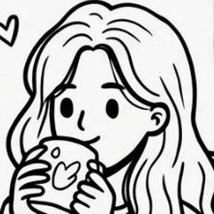

UI Snippets
Kleine Stücke UI, groß gedacht.
Mobile, Web und Prototypen aus meinen Projekten.
Print, Motion, Illustration & 3D
Abseits vom Interface.
Was ich außer UX/UI gestalte – zum Anfassen, Ansehen und Bewegen.


Über mich
Aus der Mediengestaltung ins UX, immer auf der Suche nach dem echten Problem.
Ich bin UX/UI Designerin und komme aus der Mediengestaltung Digital & Print. Irgendwann habe ich gemerkt: Mich interessiert nicht nur, wie etwas aussieht, sondern wie es sich anfühlt, wenn man es benutzt. Heute studiere ich UX-Design und arbeite am liebsten dort, wo Research und Interface zusammenkommen.
Scroll weiter zu meinem WegLebenslauf
Mein Weg
bis hierher.
Von Print über Prozesse bis zu UX – mit ein paar Umwegen, die mich weitergebracht haben.
Fachhochschulreife Gestaltung
BBS Winsen (Luhe)Au-pair in London
Raus in die WeltAusbildung Mediengestalterin Digital & Print
Machbar GmbH / BBS KasselReisezeit in Australien
Mediengestalterin · Social Media, Produktion & Prozesse
PR Druck, LüneburgEin Notion-Aufgabensystem für das Team konzipiert und eingeführt.
Google UX Design Certificate
Der Punkt, an dem mir klar wurde: Das hier will ich machen.
Product Design Bootcamp
Digitale Leute SchoolCase Study: sameSpot
Studium UX-Design (B.A.)
DIPLOMA Hochschule · FernstudiumDein Team?
Ich bin ab sofort verfügbar. Lass uns sprechen
Nach Feierabend
Was mich sonst ausmacht.
Meine Tafel – verschieb ruhig alles.


- [Song] – [Artist]
- [Song] – [Artist]
- [Song] – [Artist]
- [Artist]
- [Artist]
- [Artist]
[Buchtitel]
Nach Feierabend:
zeichnen, Gym, Pläne für die nächste Reise.
Ab sofort verfügbar · Hamburg / Remote
Ich freue mich auf dein Hallo.
Ich bin offen für Gespräche über offene Stellen, Projekte oder einfach einen Austausch.
